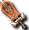

佛克原野
威爾德小徑1
因特原野
１｜２｜３｜４
出現怪物
 哥布林（毒師）
哥布林（毒師）
| 哥布林（毒師） | Lv | AC | MC | AAR | SAR | 掉落物品 |
| HP:98345 | 120 | -30 | -10 | 53 | 53 | 阿凱因赫爾利克(確認可同時出2個)、阿凱因斯特利克、 魔力棒、束縛龐梅特、所羅門德林、摩斯束縛者、蒙迪德林、樞機束縛者、布丘帽子、詭異雨勳章、詭異空氣勳章、詭異火焰勳章、遺忘的雷奧加特肩甲、遺忘的雷奧加特長槍、遺忘的雷奧加特豎琴、遺忘的雷奧加特庫雷克、遺忘的斯科爾菲吉肩甲、遺忘的斯科爾菲吉長槍、遺忘的斯科爾菲吉豎琴、遺忘的斯科爾菲吉庫雷克、被封印的雷奧加特單片眼鏡、被封印的雷奧加特沃庫魯、被封印的雷奧加特模具、被封印的雷奧加特菲利特、被封印的斯科爾菲吉單片眼鏡、被封印的斯科爾菲吉沃庫魯、被封印的斯科爾菲吉模具、被封印的斯科爾菲吉菲利特、裝飾附魔捲軸、 魔力棒、束縛龐梅特、所羅門德林、摩斯束縛者、蒙迪德林、樞機束縛者、布丘帽子、詭異雨勳章、詭異空氣勳章、詭異火焰勳章、遺忘的雷奧加特肩甲、遺忘的雷奧加特長槍、遺忘的雷奧加特豎琴、遺忘的雷奧加特庫雷克、遺忘的斯科爾菲吉肩甲、遺忘的斯科爾菲吉長槍、遺忘的斯科爾菲吉豎琴、遺忘的斯科爾菲吉庫雷克、被封印的雷奧加特單片眼鏡、被封印的雷奧加特沃庫魯、被封印的雷奧加特模具、被封印的雷奧加特菲利特、被封印的斯科爾菲吉單片眼鏡、被封印的斯科爾菲吉沃庫魯、被封印的斯科爾菲吉模具、被封印的斯科爾菲吉菲利特、裝飾附魔捲軸、 阿修羅武器碎片 阿修羅武器碎片 |
| 經驗值 | 名聲值 | 金錢 | 攻擊屬性 | 防禦屬性 | ||
| 20600 | 3500 | 0 | 隨機 | 隨機 | ||
| STR | DEX | INT | WIS | CON | ||
| 138 | 136 | 111 | 99 | 99 |
備註：瀕死時逃亡、MP/SP傷害（大）、防禦破壞、緩慢施法1、中毒感染、即使DEX+HIT+SLV=420也會出現非暴擊的怪物
哥布林（騎士）
| 哥布林（騎士） | Lv | AC | MC | AAR | SAR | 掉落物品 |
| HP:85500～ | 120 | -50 | -60 | 61 | 61 |  阿尼姆斯之門、奧術赫爾莉克（確認可同時出2個）、奧術瑪娜莉克、奧術史黛莉克、 阿尼姆斯之門、奧術赫爾莉克（確認可同時出2個）、奧術瑪娜莉克、奧術史黛莉克、 完整頭部電漿、完整鎧甲電漿、完整足部電漿、完整耳環電漿、完整項鍊電漿、完整手部電漿、完整武器電漿、各種環+OP、忘卻的雷歐加爾特岡加盾、 完整頭部電漿、完整鎧甲電漿、完整足部電漿、完整耳環電漿、完整項鍊電漿、完整手部電漿、完整武器電漿、各種環+OP、忘卻的雷歐加爾特岡加盾、 忘卻的斯科爾菲吉岡加盾、 忘卻的斯科爾菲吉岡加盾、 忘卻的門格爾頭帶（男）、忘卻的門格爾頭帶（女）、 忘卻的門格爾頭帶（男）、忘卻的門格爾頭帶（女）、 忘卻的門格爾頭盔（男）、忘卻的門格爾頭盔（女）、 忘卻的門格爾頭盔（男）、忘卻的門格爾頭盔（女）、 忘卻的斯維特頭帶（男）、忘卻的斯維特頭帶（女）、 忘卻的斯維特頭帶（男）、忘卻的斯維特頭帶（女）、 忘卻的斯維特頭盔（男）、忘卻的斯維特頭盔（女）、 忘卻的斯維特頭盔（男）、忘卻的斯維特頭盔（女）、 被封印的雷歐加爾特布衣（男）、 被封印的雷歐加爾特布衣（男）、 被封印的雷歐加爾特女衫（女）、被封印的雷歐加爾特長袍（男）、 被封印的雷歐加爾特女衫（女）、被封印的雷歐加爾特長袍（男）、 被封印的雷歐加爾特兜帽袍（女）、 被封印的雷歐加爾特兜帽袍（女）、 被封印的斯科爾菲吉布衣（男）、 被封印的斯科爾菲吉布衣（男）、 被封印的斯科爾菲吉女衫（女）、被封印的斯科爾菲吉兜帽袍（女）、被封印的美麗的龍玉、被封印的燦爛的龍玉、 被封印的斯科爾菲吉女衫（女）、被封印的斯科爾菲吉兜帽袍（女）、被封印的美麗的龍玉、被封印的燦爛的龍玉、 盜賊武器碎片、 盜賊武器碎片、 聖職者武器碎片、 聖職者武器碎片、 吟遊詩人武器碎片、上級武器附魔捲軸、上級裝飾附魔捲軸 吟遊詩人武器碎片、上級武器附魔捲軸、上級裝飾附魔捲軸 |
| 經驗值 | 名聲值 | 金錢 | 攻擊屬性 | 防禦屬性 | ||
| 20200 | 3300 | 0 | 隨機 | 隨機 | ||
| STR | DEX | INT | WIS | CON | ||
| 149 | 168 | 95 | 100 | 48 |
備註：瀕死時逃亡、防禦破壞、攻擊破壞、命中破壞、物理破壞、即使DEX+HIT+SLV=420也會出現非暴擊的怪物
 古老樹精
古老樹精
| 古老樹精 | Lv | AC | MC | AAR | SAR | 掉落物品 |
| HP:62691 | 120 | -33 | -83 | 33 | 33 | 奧術赫爾莉克（確認可同時出2個）、奧術史黛莉克、奧術瑪娜莉克、魔力之杖、完整足部電漿、 快速藥水[30分]、 快速藥水[30分]、 高級速度藥水[30分]、 高級速度藥水[30分]、 忘卻的斯科爾菲吉布利特護脛、 忘卻的斯科爾菲吉布利特護脛、 忘卻的斯科爾菲吉伊爾德護脛、 忘卻的斯科爾菲吉伊爾德護脛、 忘卻的斯科爾菲吉閃避護脛、 忘卻的斯科爾菲吉閃避護脛、 忘卻的斯科爾菲吉長靴、 忘卻的斯科爾菲吉長靴、 忘卻的斯科爾菲吉鞋、 忘卻的斯科爾菲吉鞋、 忘卻的斯科爾菲吉手套、 忘卻的斯科爾菲吉手套、 被封印的斯科爾菲吉布利特戒指、 被封印的斯科爾菲吉布利特戒指、 被封印的斯科爾菲吉魔力戒指、 被封印的斯科爾菲吉魔力戒指、 被封印的斯科爾菲吉力量戒指、武器附魔捲軸、裝飾附魔捲軸、修道士武器碎片 被封印的斯科爾菲吉力量戒指、武器附魔捲軸、裝飾附魔捲軸、修道士武器碎片 |
| 經驗值 | 名聲值 | 金錢 | 攻擊屬性 | 防禦屬性 | ||
| 20700 | 3600 | 45000 | 隨機 | 隨機 | ||
| STR | DEX | INT | WIS | CON | ||
| 126 | 137 | 101 | 123 | 87 |
備註：守護目標、怪物中毒、遠距離時防禦破壞、即使DEX+HIT+SLV=420也會出現非暴擊的怪物
 突變鼴鼠
突變鼴鼠
| 突變鼴鼠 | Lv | AC | MC | AAR | SAR | 掉落物品 |
| HP:56151 | 120 | -11 | -21 | 28 | 28 | 奧術赫爾莉克（確認可同時出2個）、奧術史黛莉克、快速藥水[30分]、高級速度藥水[30分]、忘卻的斯科爾菲吉布利特護脛、忘卻的斯科爾菲吉閃避護脛、忘卻的斯科爾菲吉伊爾德護脛、忘卻的斯科爾菲吉鞋、忘卻的斯科爾菲吉長靴、被封印的斯科爾菲吉力量戒指、被封印的斯科爾菲吉布利特戒指、被封印的斯科爾菲吉魔力戒指、 戰士武器碎片 戰士武器碎片 |
| 經驗值 | 名聲值 | 金錢 | 攻擊屬性 | 防禦屬性 | ||
| 20300 | 3800 | 45000 | 隨機 | 隨機 | ||
| STR | DEX | INT | WIS | CON | ||
| 133 | 134 | 97 | 112 | 47 |
備註：守護目標、命中破壞、即使DEX+HIT+SLV=420也會出現非暴擊的怪物
 阿爾特雷姆
阿爾特雷姆
| 阿爾特雷姆 | Lv | AC | MC | AAR | SAR | 掉落物品 |
| HP:109367 | 120 | -39 | -89 | 37 | 37 | 奧術赫爾莉克、奧術瑪娜莉克、高級速度藥水[30分]、微塵鎧甲電漿、微塵足部電漿、微塵耳環電漿、微塵項鍊電漿、微塵手部電漿、微塵武器電漿、 忘卻的斯科爾菲吉鐵手套、忘卻的斯科爾菲吉手套、 忘卻的斯科爾菲吉鐵手套、忘卻的斯科爾菲吉手套、 忘卻的斯科爾菲吉護腕、 忘卻的斯科爾菲吉護腕、 被封印的斯科爾菲吉力量耳環、 被封印的斯科爾菲吉力量耳環、 被封印的斯科爾菲吉布利特耳環、 被封印的斯科爾菲吉布利特耳環、 被封印的斯科爾菲吉魔力耳環、武器附魔捲軸、吟遊詩人武器碎片 被封印的斯科爾菲吉魔力耳環、武器附魔捲軸、吟遊詩人武器碎片 |
| 經驗值 | 名聲值 | 金錢 | 攻擊屬性 | 防禦屬性 | ||
| 17,200 | 5,200 | 45000 | 隨機 | 隨機 | ||
| STR | DEX | INT | WIS | CON | ||
| 151 | 128 | 84 | 102 | 89 |
備註：投網、對隱形無效、即使DEX+HIT+SLV=420也會出現非暴擊的怪物
無情的哥布林
| 無情的哥布林 | Lv | AC | MC | AAR | SAR | 掉落物品 |
| HP:375611 | 120 | -36 | -66 | 43 | 43 | 奧術赫爾莉克、奧術史黛莉克、 染色劑(白金金髮)、染色劑(深綠)、染色劑(黑)、 染色劑(白金金髮)、染色劑(深綠)、染色劑(黑)、 忘卻的斯科爾菲吉長槍、 忘卻的斯科爾菲吉長槍、 忘卻的雷歐加爾特護肩、 忘卻的雷歐加爾特護肩、 被封印的雷歐加爾特寶珠、 被封印的雷歐加爾特寶珠、 被封印的斯科爾菲吉劍、戰士武器碎片、盜賊武器碎片、修道士武器碎片、 預言者武器碎片、 預言者武器碎片、 騎士武器碎片、 騎士武器碎片、 忘卻的雷歐加爾特彎刀、 忘卻的雷歐加爾特彎刀、 被封印的雷歐加爾特法杖 被封印的雷歐加爾特法杖 |
| 經驗值 | 名聲值 | 金錢 | 攻擊屬性 | 防禦屬性 | ||
| 27,300 | 6,100 | 0 | 隨機 | 隨機 | ||
| STR | DEX | INT | WIS | CON | ||
| 159 | 141 | 99 | 101 | 99 |
備註：瀕死時逃亡、恐懼、重生間隔約12小時、即使DEX+HIT+SLV=420也會出現非暴擊的怪物
掉落備忘
被封印的斯科爾菲吉力量耳環、被封印的斯科爾菲吉力量戒指、被封印的斯科爾菲吉女衫（女）、眩光環